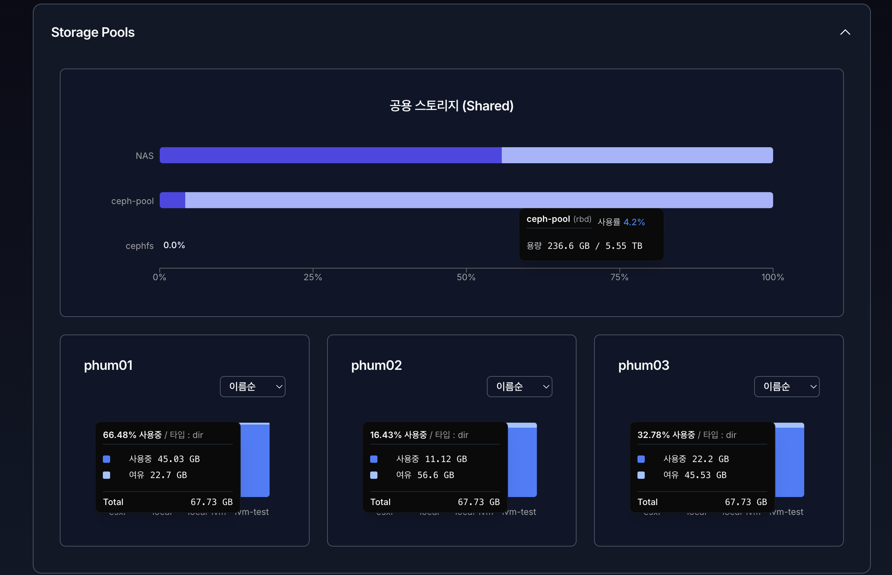

9. 리소스 (Resources)#
시스템 리소스 모니터링 화면은 VirtOn 클러스터에 포함된 각 노드의 CPU, 메모리, 스토리지 사용 현황과 현재 실행 중인 가상 머신(VM) 및 컨테이너(LXC) 상태를 실시간으로 확인하기 위한 화면입니다.
운영자는 이 화면을 통해 클러스터의 부하 상태를 파악하고, 리소스 부족 또는 이상 징후를 조기에 감지할 수 있습니다.
1. 화면 구성 개요#
리소스 모니터링 화면은 다음 영역으로 구성됩니다.
상단 헤더 영역
Summary (노드 상태 요약)
Storage Pools (스토리지 현황)
Memory & CPU Usage (리소스 사용 그래프)
Running VMs / Running LXCs (실행 중 리소스 목록)
2. 상단 헤더 영역#
표시 항목#
시스템 리소스 모니터링
현재 페이지의 제목입니다.마지막 업데이트 시간
리소스 정보가 마지막으로 갱신된 시점을 표시합니다.새로고침 버튼
클릭 시 모든 리소스 정보를 즉시 다시 조회합니다.
새로고침 중에는 아이콘이 회전하며, 데이터 로딩이 완료되면 자동으로 멈춥니다.
3. Summary (노드 상태 요약)#

클러스터에 포함된 각 노드의 현재 상태를 요약해서 보여주는 영역입니다.
주요 특징#
노드별 상태 카드 형태로 표시
CPU, 메모리, Swap 사용량, 가동 상태 등을 한눈에 확인 가능
다수 노드 환경에서도 빠른 상태 파악 가능
동작 방식#
제목 영역을 클릭하면 접기 / 펼치기가 가능합니다.
기본 상태는 펼쳐짐입니다.
4. Storage Pools (스토리지 현황)#

스토리지 풀과 노드별 스토리지 상태를 확인하는 영역입니다.
구성 요소#
4.2 Node Storage#
노드별 로컬 스토리지 상태
노드마다 개별 카드 형태로 표시
스토리지 사용률을 시각적으로 확인 가능
사용 목적#
디스크 사용량 과다 여부 확인
특정 노드의 스토리지 병목 여부 확인
HA 및 VM 배치 판단 시 참고 자료로 활용
5. Memory & CPU Usage (리소스 사용량 그래프)#

각 노드의 CPU 및 메모리 사용량을 시간 흐름에 따라 시각화한 영역입니다.
표시 방식#
노드별로 섹션이 구분되어 표시
각 노드마다 다음 그래프 제공:
CPU Usage
Memory Usage
5.1 CPU Usage 그래프#
X축: 시간
Y축: CPU 사용률 (%)
실시간 사용률 추이를 선 그래프로 표시
하단 정보#
현재 CPU 사용률이 수치로 표시됩니다.
급격한 상승이 있는 경우 노드 부하 상태를 의심할 수 있습니다.
5.2 Memory Usage 그래프#
Total Memory: 노드의 전체 메모리 용량
Used Memory: 현재 사용 중인 메모리 용량
두 항목을 선 그래프로 동시에 표시
하단 정보#
총 메모리 (GiB)
사용 중인 메모리 (GiB)
메모리 사용률 (%)
메모리 사용률이 지속적으로 80% 이상일 경우
VM 증설 또는 리소스 재배치를 고려해야 합니다.

6. Running VMs (실행 중인 가상 머신)#
현재 실행 중인 가상 머신(VM) 목록을 표시하는 테이블입니다.
표시 항목#
항목 |
설명 |
|---|---|
Time |
상태가 조회된 시각 |
VM |
가상 머신 이름 |
Uptime |
VM이 실행된 누적 시간 |
기능#
컬럼 헤더 클릭 시 정렬 가능
Time 기준
VM 이름 기준
Uptime 기준
VM 이름 클릭 시 상세 페이지로 이동 가능
7. Running LXCs (실행 중인 컨테이너)#
현재 실행 중인 LXC 컨테이너 목록을 표시합니다.
표시 항목#
항목 |
설명 |
|---|---|
Time |
상태 조회 시각 |
VM |
컨테이너 이름 |
Uptime |
실행 지속 시간 |
LXC는 VM과 분리하여 표시되며,
컨테이너 기반 워크로드 상태를 빠르게 확인할 수 있습니다.
8. 상태 및 오류 안내#
Proxmox 설정 미완료 시#
화면 중앙에 다음 메시지가 표시됩니다.